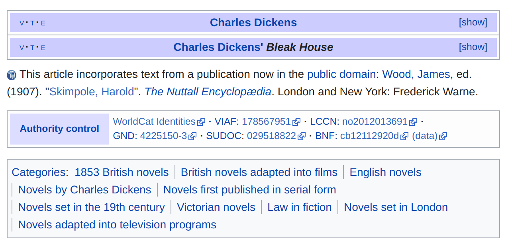
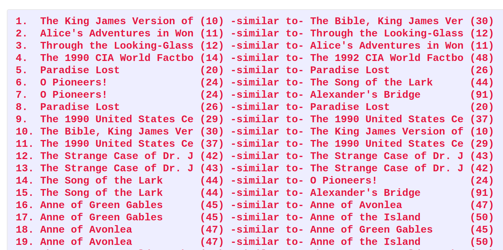

Corpus-DB
Jonathan Reeve
Problem
How can I download all the Charles Dickens novels?

Poor Solution

Project Gutenberg Problems
- Server bans robots
- Many duplicate texts
- Texts contain paratext, licenses
Metadata Problems
- No publication dates
- Little other metadata.
Wikipedia Has Metadata
- Novel setting (London, Paris)
- Genre, category (Bildungsroman)


Book Databases Have Metadata
- Google Books
- Amazon
- Goodreads
Solution
Solution
Programmatically combine metadata from:
- Project Gutenberg
- Wikipedia
- Google Books
- Amazon
- Goodreads
Solution: Clean Texts
- Strip legal licenses
- Strip paratexts (tables of contents, indices)
Solution: Vector-Based Deduplication
- Use word embeddings to identify possible duplicates
- (Also finds texts that belong to the same series)
Solution: Combine Archives
- Project Gutenburg
- Oxford Text Archive (Public Domain)
- British Library (Public Domain)
- UVA Etext Archive
- Others
Corpus-DB
Corpus-DB Is Not
- Not a service
- Not a website
- Not user-friendly
Corpus-DB
- A textual corpus database
- With awesome metadata
- And an API wrapper for it
DB Example: a Single-Author Corpus
DB Example: Novels Set in London
DB Example: British Literature
DB Example: Novels Published in Britain Between 1900-1930
DB Example: Bildungsromane
API
- RESTful
- Query over HTTP using mnemonic URLs
- Returns JSON
API Example: Single-Author Corpus
api.corpus-db.org/author/DickensAPI Example: Setting
api.corpus-db.org/setting/LondonAPI Example: Wikipedia Category
api.corpus-db.org/novels/adaptedTo/comics
api.corpus-db.org/novels/adaptedTo/filmsAnalysis Example: Vector Deduplication

Analysis: Vector Similarities

Analysis: LCSH vs. Goodreads Ratings

Analysis: Paris vs. London Novels (GoodReads Ratings)
Current Status
- DB complete, needs cleaning
- API being written
- Please help! (I have exams to take)
OMG OMG HOW CAN I GET IT!?
- Help out with the project
- Or wait until the public API is released
Links
- github.com/JonathanReeve/corpus-db: project home
- jonreeve.com: my website
- <xpmethod.plaintext.in>: our lab
- <twitter.com/j0_0n>: twitter